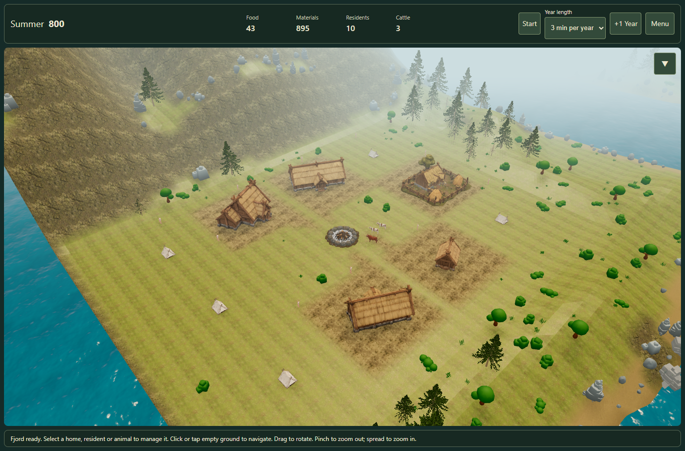
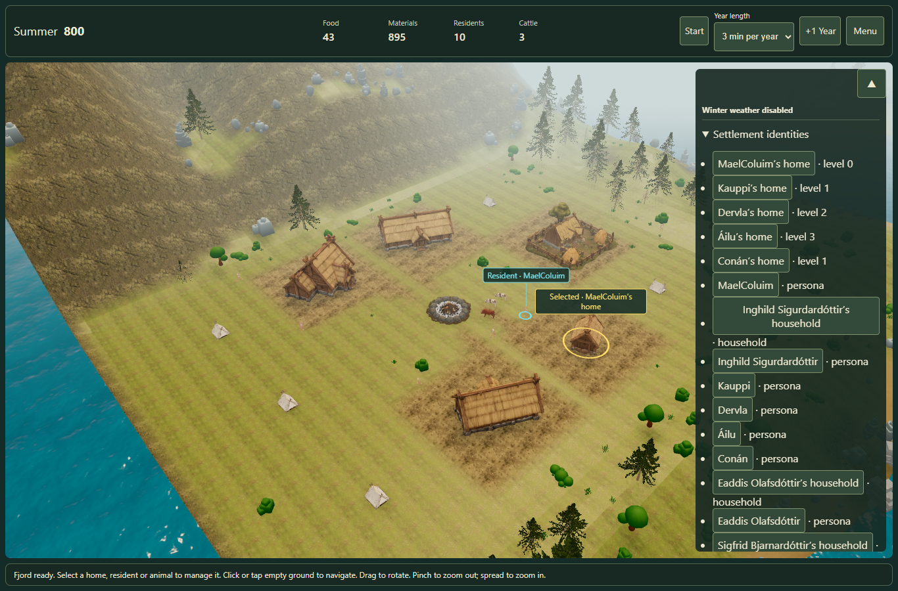

The supplied StoneCampFire is now twice its source size (approximately 6.4m wide). Ordinary permanent homes face it. Farmyards keep their existing orientation, including their terrain and fences. Tents remain on grass.
Open the live settlement · Measured browser result
Real Hut, Homestead, Longhouse, Great Hall and FarmHomestead, together with remaining tents. A reserved middle place and dry paths connect the permanent homes. This source model is a stone fire pit; flame animation and ceremonies are not included.

The automated browser check uses touch emulation, selects a resident on the actual canvas, checks a house in the management panel, and runs resident/cattle motion. This is not a physical iPad test.

Old visual layouts are rebuilt once around the middle place. Canonical campaign facts, geography, history and the ship mooring are preserved. New layout saves round-trip exactly.